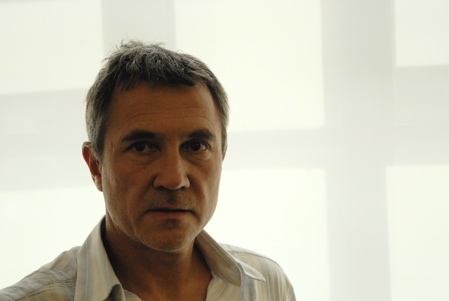

Matthew Hilton

Matthew Hilton (born 1957) is a British furniture designer of modern furniture.
The British furniture designer Matthew Hilton attended both Portsmouth College and Kingston Polytechnic in London. In 1984 Matthew Hilton opened a design studio in London, where he showcased his own furniture and lighting. Since 1986 Matthew Hilton's designs have been executed by SCP of London. Today Matthew Hilton is a leading British furniture designer, whose pieces are formally sophisticated. Even though they may appear surprisingly classical, they are still innovative; Matthew Hilton never disregards objectivity and function. In 1991 Matthew Hilton designed "Balzac", a leather chair with softly rounded forms. Again in 1991, he designed "Auberon", a table with a top made of thick beams whose surfaces have been left rough and whose legs flair slightly. In 1996 Matthew Hilton designed the "Orwell" sofa, which is covered in velvet. Earlier, in 1987, Hilton designed the three-legged "Antilope" table, also for SCP, and in 1988 the "Flipper" table. In 1998 Matthew Hilton designed "Wait", a plastic chair, for Authentic. Matthew Hilton's furnishings and lighting are also made by and for Alterego, Driade, Disform, Nani Marquina, Mobles 114, Santa & Cole, XO, Habitat, and others.